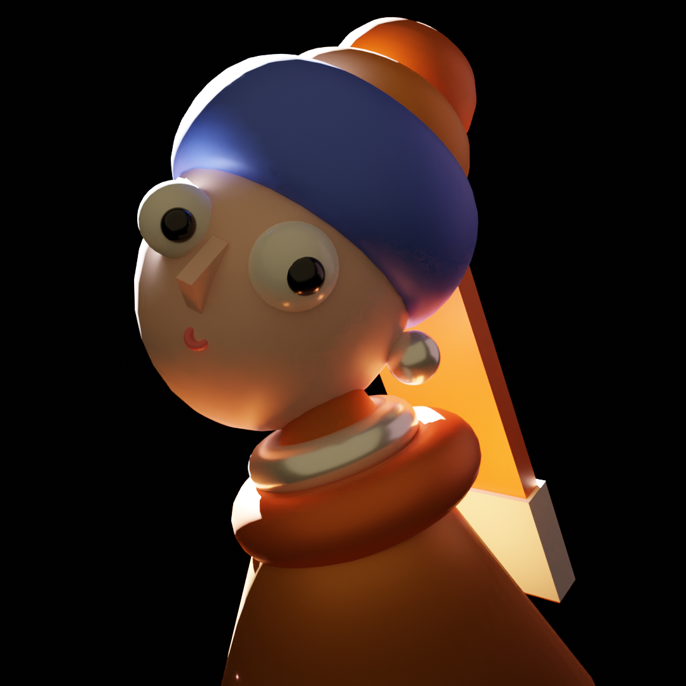

Hallo! Ich bin FanHe
Hallo! Ich bin Fan He, eine leidenschaftliche Unity Entwicklerin mit über viele praktischer Erfahrung im XR-Bereich.
Ich entwickle immersive Anwendungen für Geräte wie Meta Quest, Microsoft HoloLens und Android – mit Fokus auf ARFoundation, Niantic Lightship und anderen AR-Plugins.
Meine Stärken liegen im Prototyping, der Optimierung von User Experiences und der Schnittstelle zwischen Technik und Design.
Ich bin auf der Suche nach einer neuen Herausforderung als **Unity/XR Entwicklerin** in einem kreativen, technologiegetriebenen Team.
Skills
- Unity Engine (2D/3D)，XR Entwicklung (AR/VR/MR), VR/AR Frameworks&SDKs
- Zielplattformen: Meta Quest 2, HoloLens 2(MRTK), Android (ARCore,Niantic Lightship)
- C# (Fortgeschritten), C++, GitHub, html
- Sprache: Deutsch (C1), Englisch (fließend), Chinesisch (Muttersprache)
👩‍💻 Berufserfahrung
- XR Softwareentwicklerin – customQuake GmbH (Febure 2024–Heute)
- Entwicklung von XR-Anwendungen für die Android-Plattform und die Webversion unter Verwendung von Unity3D und WebGL-Technologie.
- Teilnahme am Forschungsprojekt mdf BIM+ (VR Vision bei Quest), Pflege und Beheben von VR Unity Projekt fehlern und Problemen
- Werkstudent Bildbearbeitung – Kinderwelt Tausendkind GmbH (Mai 2022 - Juli 2023)
- Nachbearbeitung von Bildern neuer saisonaler Produkte (Farbkorrektur,Bildretusche, Composing, Freisteller usw.)Pflege der Inhalte des Onlineshops
- MASTERARBEIT – Technische Hochschule Brandenburg(September 2022 - April 2023)
- Untersuchung der Auswirkungen der AR-Technologie auf die SozialisierungEntwicklung einer Android-Multiplayer-Demo unter Verwendung von Unitymit ARcore, einschlieBlich Mehrspieler-Online-Verbindung und Interaktion,implementiert in C#. Erstellung von detaillierten 3DModellen zur Gestaltung von Game Szenarien mitBlender
- STUDENTISCHE AUSHILFE –Organic Village(November - 2020Januar 2022)
- RegelmaBige CMS-Aktualisierungen der Webseite, Fotomanipulation undVideoproduktion erleichtern Besuchern das Verstandnis fur den speziellen Schutzund die Unterstutzung, die Organic Village Menschen mit Behinderungen bietet.
- LABORPRAKTIKUM VIRTUAL REALITY – Guilin University of Electronic Technology(Februar 2016 - Juni 2017)
- Entwicklung der VR Gebaudetour Anwendung:Koordination der Zusammenarbeit: Effektive Koordination zwischen demGame-Art-Team und dem Entwicklungsteam, um die Projektziele innerhalb dervorgegebenen Zeit zu erreichenModellierungsbeteiligung: Teilnahme an der Modellierung von virtuellenUmgebungen und Objekten mit 3ds Max im Museum
📠Ausbildung
- MASTER OF SCIENCE (2020-2023) –Technische Hochschule Brandenburg
- Abschlussnote: 1.6 Schwerpunkt: Mixed-Reality; Interface Design; Generatives Design
- BACHELOR OF SCIENCE (2013-2017) –Guilin University of Electronic Technology
- Abschlussnote: 2.3 Schwerpunkt: Computer Science; Datenstrukturen; Programmierung C++,C#;Computergrafik(OpenGL); Game Design
💼 Projekte

Projekt A
Ein Webtool zur Aufgabenverwaltung mit Drag-and-Drop Funktionalität.
🔗 Projekt ansehen